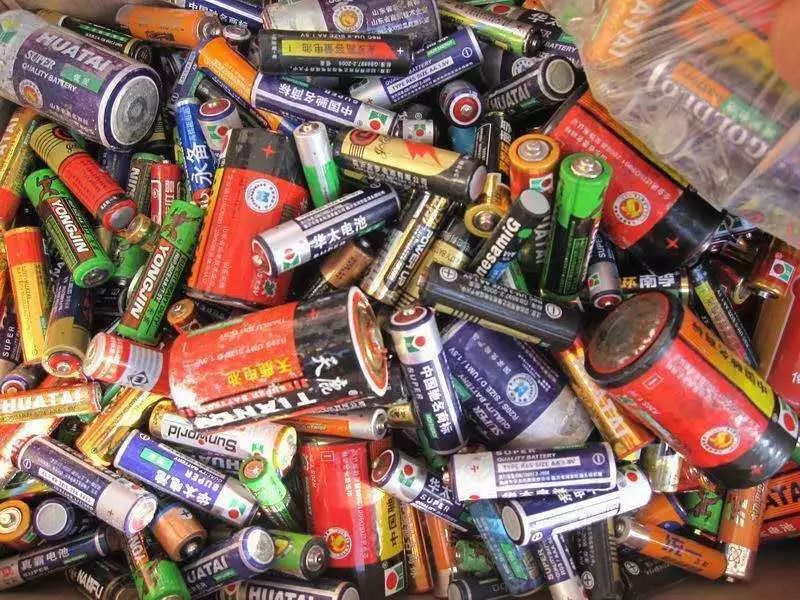

有害垃圾 Hazardous waste


定义 Definition
指含有对人体健康或自然环境造成直接或潜在危害成分的废弃物，含毒性、腐蚀性、易燃性、放射性物质，需专业安全处理避免污染环境
Refers to wastes that contain components that pose direct or potential harm to human health or the natural environment. These wastes include substances with toxicity, corrosiveness, flammability, and radioactivity, and require professional and safe handling to avoid environmental pollution.
例子 Examples
1.废电池类 Waste Batteries
纽扣电池（如手表、计算器电池）、充电电池（手机/电动车锂电池）、汽车蓄电池、电动车电瓶等。
Button batteries (such as those for watches and calculators), rechargeable batteries (for mobile phones/electric vehicles), car batteries, electric vehicle batteries, etc.
2.废灯管类 Waste fluorescent tubes
节能灯管、LED灯内部汞元件、霓虹灯管、紫外线灯管等。
Energy-saving fluorescent tubes, mercury components inside LED tubes, neon tubes, ultraviolet tubes, etc.
3.废药品类 Waste pharmaceuticals
片剂、胶囊、中药药渣、沾染药品的瓶罐、药盒、温度计（含水银）、血压计（含水银部件）等。
Tablets, capsules, medicinal residue from traditional Chinese medicine, bottles and jars contaminated with drugs, medicine boxes, thermometers (containing mercury), blood pressure monitors (containing mercury components), etc.
4.化学品类 Chemical products category
染发剂罐、指甲油瓶、消毒剂（含氯/酸）、杀虫剂瓶、除草剂包装、化学试剂瓶、废酸碱溶液等。
Hair dye cans, nail polish bottles, disinfectants (chlorine/acid-based), insecticides bottles, herbicide packaging, chemical reagent bottles, waste acid and alkali solutions, etc.
5.其他危险品 Other dangerous goods
灭火器、瓦斯罐（需排空）、X光片、胶片、相片显影剂等。
Fire extinguishers, gas cylinders (need to be emptied), X-ray films, photographic films, photographic fixatives, etc.
上一篇：可回收垃圾
下一篇：湿垃圾